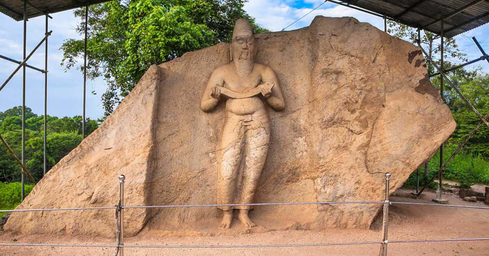
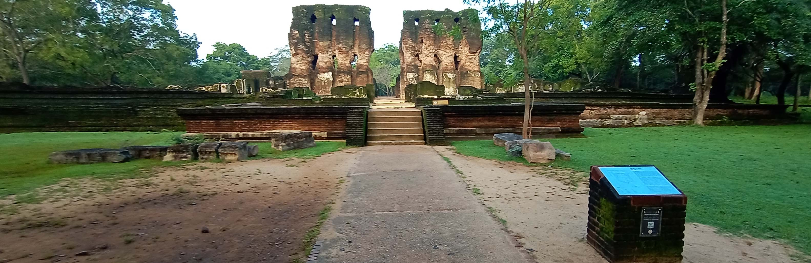

The Parakramabahu statue is a colossal statue in Polonnaruwa Ancient City that faces the Parakrama Samudra Reservoir. The statue was created by King Parakramabahu I and is placed near the Potgul Vihara monastic complex. The figure itself is carved into a large rock during the 12th Century AD. It is one of the finest stone statues belonging to this period. Close to twelve feet tall, this statue is of a man with a grave, but wise expression with half-closed eyes and a sad smile as he reads from what most think is a manuscript he holds in his hands at around chest height.
